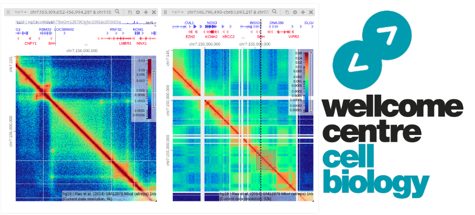

After a brief introduction, I will cover the steps involved in the processing of Hi-C data, from raw fastq reads into a contact matrix, then we will jump straight into visualizing data and exploring features of interest.
We are using the Linux command line to run most of the tools we use today. If you are new to Linux please complete the Intro to Command Line Workshop.
We have several servers that you can login to. For the purpose of this practical we will use bifx-core3. No matter where you login, you will have access to the same files and programs. If not on the University network, this requires you to use a VPN.
There are several options to login to our machines. You can use the Terminal app on a Mac or equivalant Command Prompt or MobaXTerm on Windows. Login via X2G0 if you want a graphical interface.
To login via command line: ssh USER@bifx-core3.bio.ed.ac.uk
Login with your user credentials for our servers
If you are using MobaXTerm, an alternative way of logging in to the server is shown in the MobaXTerm demo.
Once you have typed in your password, you should see some welcome text and a prompt that looks something like this:
[USERNAME]@bifx-core3:~$
In order to view files created on the server, we need to create a public_html directory.
After logging in you should be in your $HOME directory, check with;
pwdThis should show the PATH of your present working directory, which should now be your home directory as you have just logged in. You can return to this place at any time using the change directory command.
cdYou have permissions to create files and directories under your home folder. Lets create some now which we will use later on.
mkdir ~/public_html
mkdir ~/public_html/TMPHere we have used the absolute path name for each directory using ~/ as a shortcut for your $HOME directory. Nested directories are separated by the forward slash ‘/’ sign.
As you have created ~/public_html, contents of this directory are available online with any web browser
To see it enter the following URL, changing yourUserName to what ever your username is.
http://bifx-core3.bio.ed.ac.uk/~yourUserName
For some of you, this may be found here instead;
https://bifx-core3.bio.ed.ac.uk/Public/yourUserName/
First, make a new directory for this tutorial and move into that directory. Then link the directory to your public html folder as we are going to make everything public in this tutorial.
cd
mkdir Hi-C_workshop
cd Hi-C_workshop
ln -s $PWD ~/public_html/As Hi-C processing is slow, we are using some test data from the Dixon et al. 2012 paper.
These contain a small subsets of reads (~200,000).
Let’s copy the data into our project folder, we are copying multiple folders and files so need the recursive ‘-r’ argument.
cp -r /homes2/drober19/hic_workshop/test_data .The data is also available here
When you receive data from a sequencing centre the file should also be provided with an alphanumeric string known as an md5 checksum. We can think of this as a files passport or fingerprint and use it to verify our data and ensure it wasn’t corrupted or truncated during download. The md5 checksums for these files are below. Lets check that now using the md5sum command:
| md5 checksum | filename |
|---|---|
| 94662045313249dec4d74f1eb337ddea | test_data/dixon_2M_2/SRR400264_01_R1.fastq |
| 43fcb38e4c64146a4ff7872176f7b698 | test_data/dixon_2M_2/SRR400264_01_R2.fastq |
| 41842bf0dcc77fb9cd4107b103d2588e | test_data/dixon_2M/SRR400264_00_R1.fastq |
| 09db06e20633213743a3081f0a3121a9 | test_data/dixon_2M/SRR400264_00_R2.fastq |
md5sum test_data/*/* > md5
cat md5 # prints out the contents of md5
#To check the files and md5 sums match at any time
md5sum -c md5 We will be using HiGlass later on;
Again, you’ll need a VPN to access the local server if you’re using your own laptop;
http://bifx-core3.bio.ed.ac.uk:32771/app
Or use the official HiGlass site.